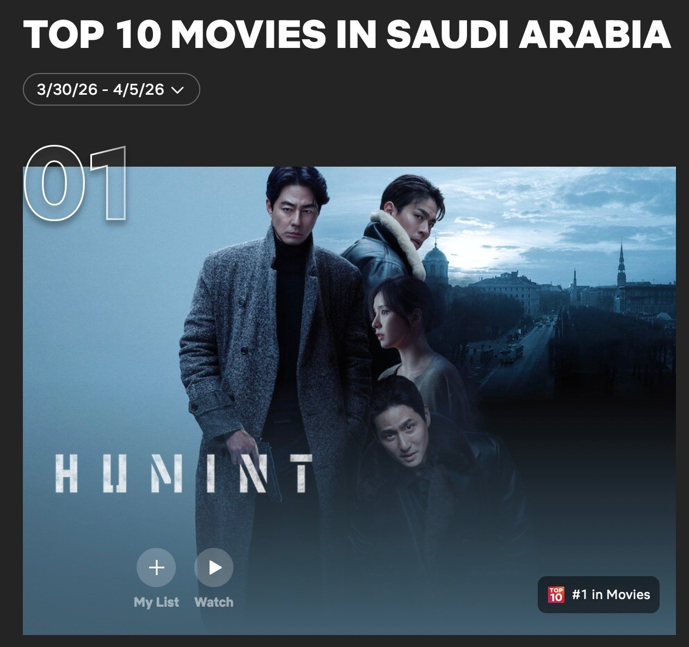
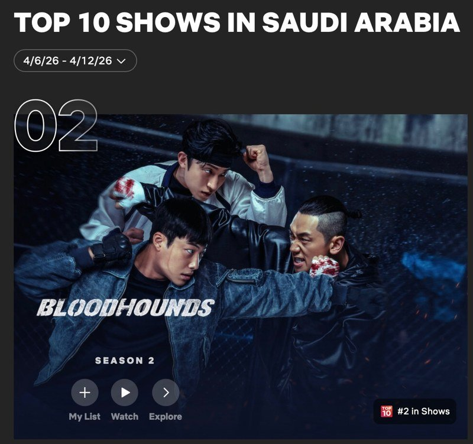
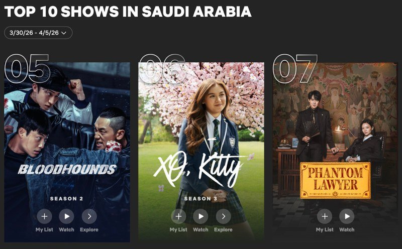
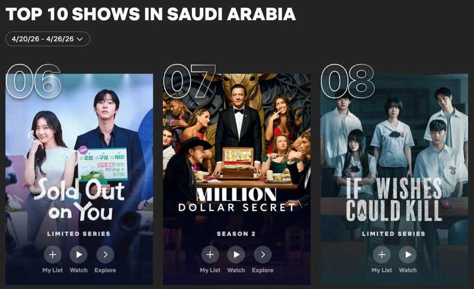

영화 부문: <휴민트> 1위와 OTT 직행의 의미
사우디아라비아 넷플릭스 4월 영화 부문에서는 조인성, 박정민 주연의 액션 영화 <휴민트>(감독 류승완)가 공개 직후 1위를 기록하며, 2주 연속 상위권을 유지했다. 넷플릭스 통계에서 한국 콘텐츠는 드라마에 비해 영화 부문이 상대적으로 약세를 보이는 가운데, <휴민트>의 성과는 눈에 띄는 흐름이다. 이 작품은 한국에서는 2026년 2월 11일 극장 개봉 이후 4월 1일 넷플릭스에 공개된 작품으로, 비교적 빠르게 OTT로 이동한 사례다.

사우디 넷플릭스 영화 톱10 1위 '휴민트'(4월 1주차) — 출처: 넷플릭스 홈페이지
<휴민트>는 손익분기점 약 400만 명 대비 국내 관객 수 198만 명으로 집계되며 극장에서는 기대만큼의 성적을 내지 못했다. 이후 비교적 짧은 기간 안에 OTT로 넘어가면서, 극장 성과와 별개로 글로벌 플랫폼에서 다시 소비되는 흐름을 보여준다. 이 과정은 영화 유통 구조 변화와 연결된다. 극장 개봉 이후 OTT 공개까지의 기간, 이른바 '홀드백(holdback)'은 원래 극장 산업을 보호하기 위한 장치였다. 하지만 OTT 성장과 관객 소비 방식 변화로 이 기간은 점점 짧아지고 있다. 최근에는 개봉 한 달 내 OTT 공개, 혹은 극장 개봉 없이 바로 온라인 공개되는 사례도 늘고 있다.
드라마 부문: 장르 확장과 동시 소비 구조
드라마 부문에서는 한국 콘텐츠의 강세가 뚜렷하게 나타났다. 4월 3일 공개된 7부작 액션 드라마 <사냥개들 시즌2>(연출·극본 김주환)는 1주차에 5위로 진입한 뒤 2주차에는 2위까지 올랐다. 동시에 전 시즌 <사냥개들 시즌1>(2023년)도 7위에 다시 오르며 시리즈 전체가 함께 소비되는 흐름을 만들었다.

사우디 넷플릭스 쇼 톱10(4월 2주차) 2위 '사냥개들 시즌2' — 출처: 넷플릭스 홈페이지
넷플릭스 오리지널 드라마 <엑스오, 키티 시즌3>(XO, Kitty)(연출 제니 한)도 6위에 올랐다. 이 작품은 서울과 부산 등 한국 로케이션을 배경으로 기숙학교 이야기를 전개하면서, 한국 공간이 글로벌 콘텐츠 안에서 확장되는 모습을 보여준다. 같은 기간 <신이랑 법률사무소>(연출 신중훈, 극본 김가영·강철규)가 9위에 오르며 법정 장르까지 포함해 한국 및 한국 관련 콘텐츠가 상위권의 상당 부분을 차지했다.

4월 1주차 쇼부문 5위 '사냥개들', 6위 '엑스오, 키티 시즌3', 7위 '신이랑 법률사무소' — 출처: 넷플릭스
4주차에는 4월 22일 공개된 12부작 드라마 <오늘도 매진했습니다>(연출 안종연, 극본 진승희)가 순위권에 진입했다. 농촌을 배경으로 농부와 쇼호스트의 관계를 중심으로 전개되는 작품으로, 한국의 농촌 공간을 활용한 로맨스 서사가 특징이다. 신선한 소재와 익숙하지 않은 배경 설정이 해외 시청자들의 관심을 끌고 있는 것으로 보인다.
이어 4월 24일 공개된 8부작 공포 드라마 <기리고>(연출 박윤서, 극본 박중섭)가 같은 주차에 8위에 오르면서 액션, 로맨스, 법정, 공포까지 장르 전반에서 한국 콘텐츠 소비가 고르게 나타났다.

4월 4주차 쇼부문 6위 '오늘도 매진했습니다', 9위 '기리고' — 출처: 넷플릭스
홀드백(holdback) 논쟁: 영화 유통 구조의 변화
OTT 중심 소비가 확산된 배경에는 영화 유통 구조 변화가 있다. 홀드백은 극장 개봉 이후 VOD, IPTV, OTT로 넘어가기까지의 시간을 조정해 각 플랫폼의 수익 구조를 보호하는 장치였다. 하지만 OTT가 커지면서 이 구조는 빠르게 흔들리고 있다. 일부 작품은 개봉 한 달 만에 OTT로 이동하고, 아예 극장 개봉 없이 온라인으로 공개되는 경우도 생기고 있다. 특히 <휴민트>처럼 빠르게 넷플릭스로 이동한 사례는 이런 변화의 상징처럼 언급된다.
현재 국내에서는 홀드백을 최소 6개월로 법제화하려는 논의도 이어지고 있다. 하지만 업계 입장은 갈린다. 극장은 관객 이탈을 막기 위해 일정 기간 보호가 필요하다고 보고, 제작·배급사는 작품 성격에 따라 유통 전략이 달라져야 한다고 본다. 여기에 관객 인식도 변하고 있다. 사우디 관람객 입장에서는 OTT 공개 시점이 빠를수록 접근성이 높아지는 만큼, 긴 홀드백 구조보다 유연한 유통 방식이 더 긍정적으로 작용한다. 창작자들 역시 일률적인 규제가 콘텐츠 유통의 다양성을 줄일 수 있다는 점을 우려하고 있다. 결국 이 논쟁은 '극장을 어떻게 살릴 것인가'와 '콘텐츠를 어떻게 더 빨리 소비하게 할 것인가' 사이의 균형 문제로 이어지고 있다.
홀드백 논쟁의 이면: 사우디 시청자의 시선
결국 한국 영화 콘텐츠는 극장 성적과 별개로 OTT를 통해 다시 평가받는 구조가 만들어지고 있다. 한국에서는 홀드백 기간을 둘러싼 논쟁이 이어지고 있지만, 사우디아라비아에서는 한국 영화가 극장에서 개봉되는 경우 자체가 드물다. OTT는 사우디 관람객이 한국 영화를 접할 수 있는 사실상 가장 현실적인 창구인 셈이다. 홀드백이 짧아질수록, OTT를 통한 접근이 빨라질수록, 사우디 시청자들에게 선택지는 더 넓어진다. 국내에서 논쟁이 계속되는 동안에도, 사우디 OTT 시청자들에게 이 변화는 분명 반가운 소식이다.
사진출처 및 참고자료
— 투둠 바이 넷플릭스(Tudum by Netflix) 홈페이지, www.netflix.com/tudum/top10/saudi-arabia/tv
— 헤럴드경제 (2026.3.30). '휴민트' 개봉 49일 만에 안방극장 출격…'홀드백' 논쟁 재점화하나, biz.heraldcorp.com/article/10706589